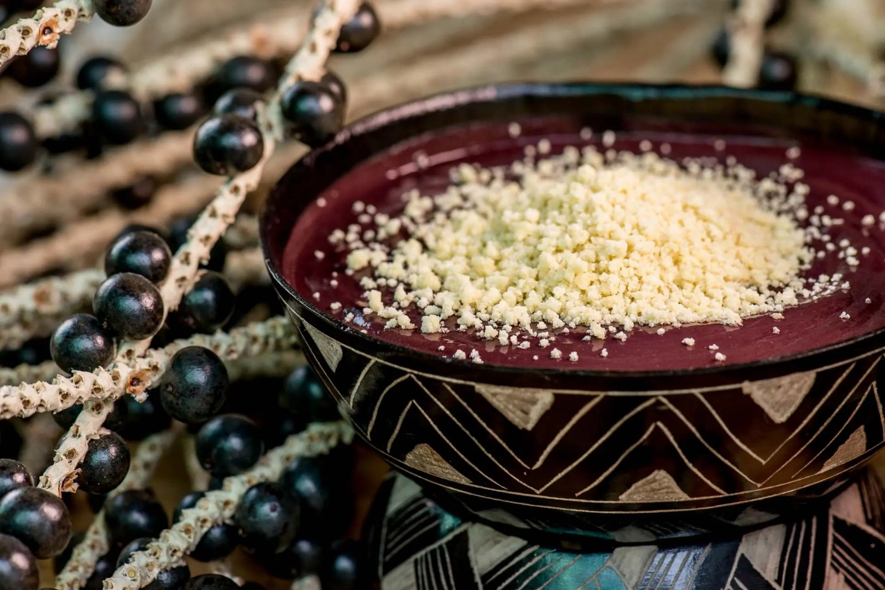

Em meio aos acordes vibrantes e às danças pulsantes que marcaram sua trajetória musical, Joelma, a renomada ex-vocalista da banda Calypso, surpreendeu o público ao trilhar um novo caminho, desta vez, entre as panelas e sabores amazônicos. A cantora paraense, conhecida por sua energia contagiante nos palcos, decidiu levar um pedaço do Pará para o Brasil através de sua própria unidade VSB, onde o destaque é o autêntico tacacá, símbolo inconfundível da culinária regional.
A vista do nosso restaurante... de frente para o Rio Caeté! Lindo demais!
Nosso restaurante de dia com as portas fechadas. Perto do comércio local e de frente para uma das igrejas mais antigas da cidade.
Nosso restaurante a todo vapor para te servir com pratos suculentos que vão fazer você querer jogar o cabelo!
Jornal O Globo
"A VSB-Pará é uma verdadeira celebração da riqueza gastronômica da região amazônica. Com uma interface intuitiva e cativante, a plataforma nos transporta para um passeio virtual pelos sabores autênticos do Pará. A cuidadosa seleção de pratos típicos, acompanhada de descrições detalhadas e imagens vívidas, proporciona uma experiência culinária única."
Folha de S. Paulo
"Explorar a VSB-Pará é uma viagem sensorial que nos transporta diretamente para a Amazônia. A variedade de pratos regionais apresentados de forma acessível e atrativa cativa desde o primeiro clique. Além da excelência na apresentação visual, a plataforma oferece informações detalhadas sobre cada iguaria, contextualizando sua importância cultural e histórica. Acreditamos que este site não apenas celebra a culinária paraense, mas também contribui para a preservação e disseminação das tradições gastronômicas do Pará."
Estadão
"A VSB-Pará se destaca como uma iniciativa inovadora que vai além de simplesmente apresentar receitas regionais. Com uma abordagem envolvente, o site contextualiza cada prato, mergulhando os visitantes nas histórias e tradições que permeiam a culinária paraense. A navegabilidade fácil e a estética atraente fazem com que a exploração do site seja uma experiência agradável. Para os amantes da gastronomia brasileira, esta é uma plataforma essencial que oferece uma verdadeira imersão nos sabores autênticos do Pará."
Email: contato@variossaboresbrasilpara.com
Telefone: +55 21 98765-4321